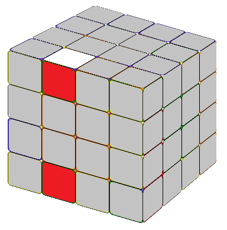

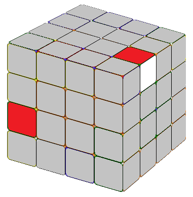
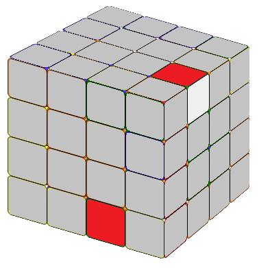
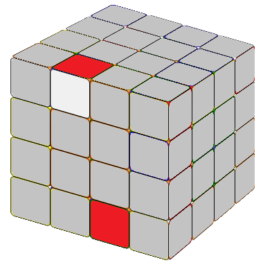
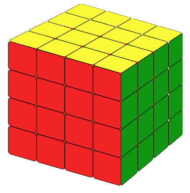
Now let's study how to solve a 4x4 cube. The most common way is to reduce a 4x4 cube to a 3x3 cube which we already know how to solve.The first step is to fix the six 2x2 center blocks. Notice that for 4x4 cubes, the centers are not fixed. For a 3x3 cube, the opposite side of the red center is always orange; the opposite side of the white center is always yellow. When you let the yellow side face you, and let the green side be the top layer, then the right side is always red. But for the 4x4, it's another case, as you need to pay special attention to the orientation of the center pieces.
You could fix any center first. The first center block is very easy. Let's say we have solved the red center block, and we want to solve the opposite orange center block without damaging the red center blocks(Fig 1.01). (The red center block is on the right, already solved, hidden from our view.)
First, we get two 1x2 orange blocks. Then contrary to our common sense, we need to line up these two orange blocks like Fig1.03 (not Fig1.02).
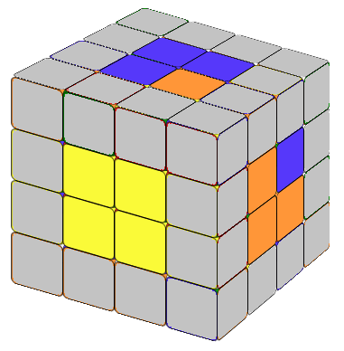
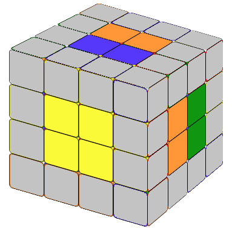
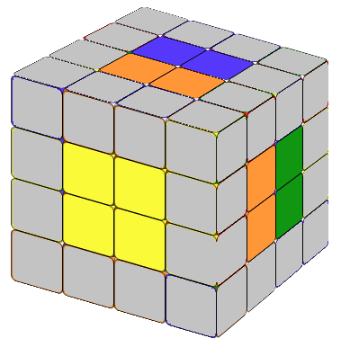
Now excute movement "f" (Fig.1.04), so that the 1x2 orange blocks on the top move to the same position as the orange 1x2 block on the right. Next we excute movement "R2" (Fig.1.05),then "f'" (Fig.1.06) so the other 1x2 orange block come back and the opposite red 2x2 center block (which is on the left side and not shown on the figure) remains the same.
Do this for all the centers.
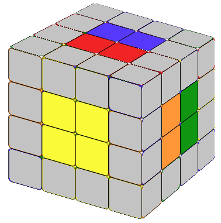
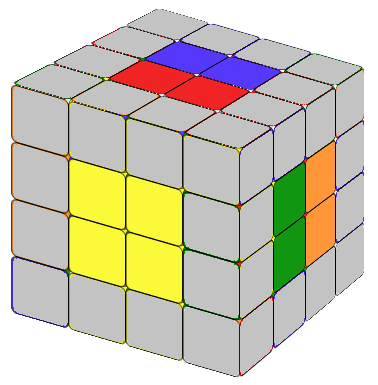
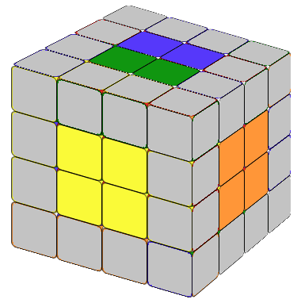
Let's see another example. Lets start from Fig.1.07, the movement f' resulting in Fig.1.08, movement U2 resulting in Fig.1.09 then movement f resuting in Fig.1.10, all center blocks fixed.
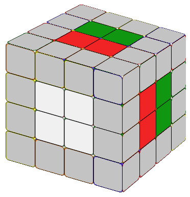
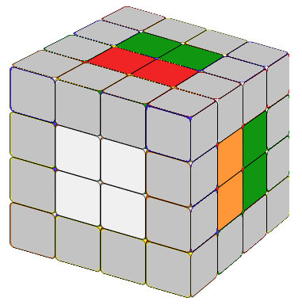
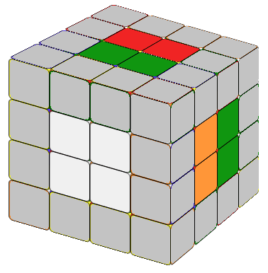
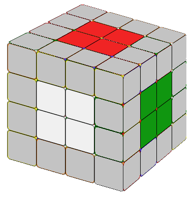
But if we are not careful, from Fig.1.07, we excute movement f (resulting in Fig 1.11), next R2(resulting in Fig.1.12), after that f' resulting in Fig.1.13. Now the top layer center block is green, the right center block is red and the front center block is white which is impossible (for a 3x3 cube). Or if we turn Fig.1.13 90 degree resulting in Fig.1.14, the green layer and blue layer are adjacent. It is impossible (for a 3x3 cube).
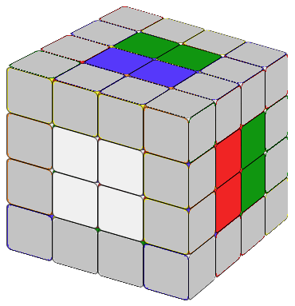
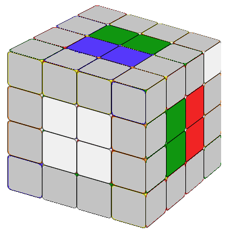
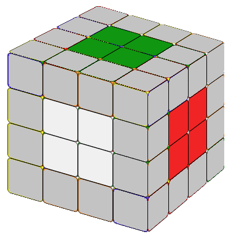
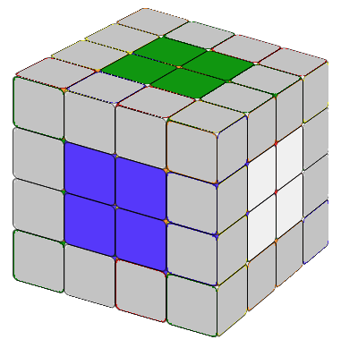
If the center block orientation is wrong, you won't be able to solve the cube. If you are not sure of the orientation, put an already solved 3x3 cube beside you as a reference.
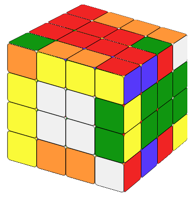
Now that we have the center block solved, to reduce the 4x4 cube to 3x3, we need to solve all the edges. Here a solved edge is a 1x2 block with the same color. For example, in the image to the left, on the front side, the yellow-orange 1x2 block is solved, but on the right-up column the edge is not. Combining edges is time consuming but it's very intuitive. We do not need to memorize any formulas. I'll show you the way using examples.First, we try to find a pair of matching cubies. For example, on Fig 2.01, on the front-up column there is a red-yellow cubie. On the front-down column, there is also a red-yellow piece (the color yellow is on the down side, not shown in this picture). They are also on columns beside each other. Let's call this matching pair position situation (a). In this situation, we could solve the edge using the following method.
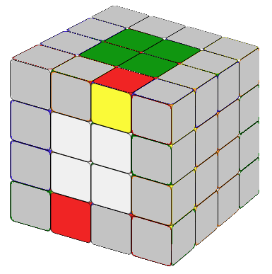
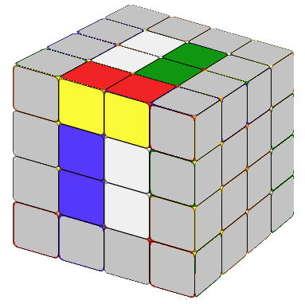
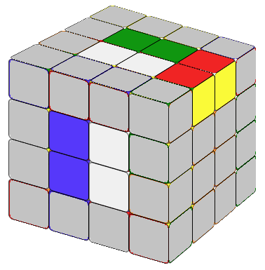
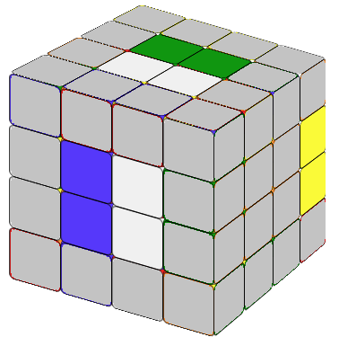
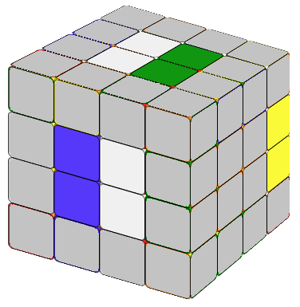
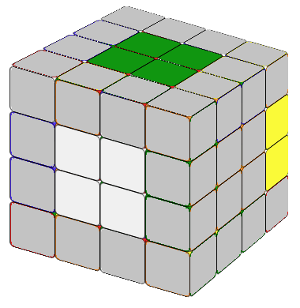
First we excute movement l' so the red-yellow cubies will be together as a 1x2 block, (Fig 2.02) then U' turning the top layer to the right,(Fig 2.03) next, execute movement R, so an unsolved 1x2 block will be in the same position of the solved red-yellow block.(Fig 2.04) Now execute movement U to come back (Fig 2.05); and movement l to correct the color of the center block (Fig 2.06) and the newly solved 1x2 yellow-red blcok staying safely on back-right column (you will only see 1x2 yellow color since the red is in the back).
There is no need to memorize the formula. You need to understand it. For example, in the formula above "l' U' R U l", instead of "l'" you could use "r" first, then the last movement should be "r'". You could also turn the top layer to the left first, then the second movement will be U (and the second last movement will be U'). Movement R could also be R2 or R', as our porpose is to replace the solved 1x2 block with a unsolved one.
Sometime, we will find two matching pairs of cubies in another position.
For example, in Fig 2.07 there is a white-green cubie on the up-front column, and there
is also a white-green cubie on the down-front column (the white is
on the down side, hidden from the view). But they are
lining up. Let's call this matching pair position situation (b).
Then we need to change this situation to situation (a) so we can solve
it using the method above.
There are many ways to do it.
For example, as shown from Fig 2.07 to Fig 2.11, we use formula:
Play with the cube, you will find your own way to do it.




Sometimes, in the end there are only two pairs of edges unsolved, then we cannot use the method we discussed above. First we need to arrange these two pairs of cubies's position in situation(b) like Fig 2.12. Then we can solve these last two pairs of edges together use the following formua:
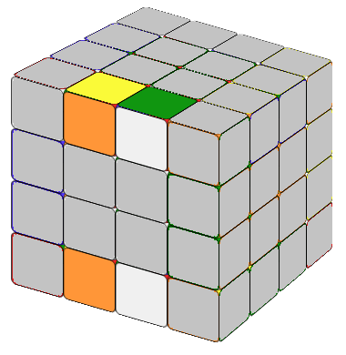
r →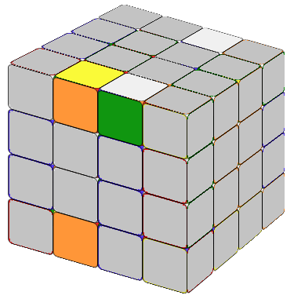
U'→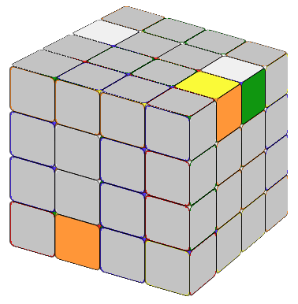
F →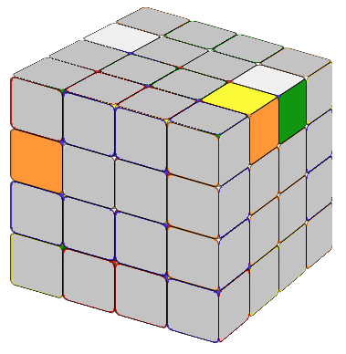
R'→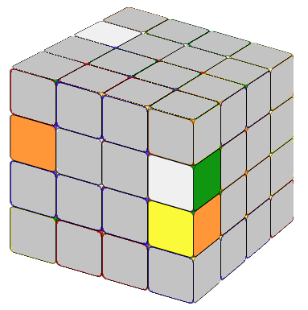
U →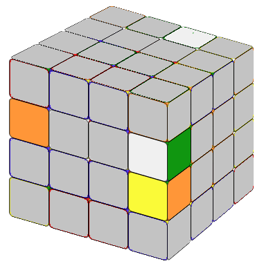
F'→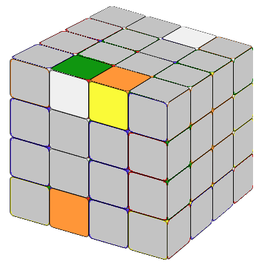
r'→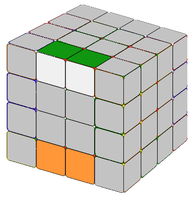
Now we have the 4x4 cube with solved centers (2x2 blocks) and edges (1x2 blocks). We can solve it just like a 3x3 cube. However, you will sometimes encounter situations which will not happen in a 3x3 cube.
Assume that we have solved the white layer, the second layer, now we need to solve the up yellow layer. As a 3x3 we try to get a yellow cross by using the "Fruit" formula. Most of the time, it works. Sometimes it doesn't. If you cannot solve it, use the following formula.
You can see the animation here.
Yellow Cross Special CaseIf you only need to exchange two edges, using a very simple formula, the cube will become the familar 3x3 cube situation. This formula will move the second layer beside R (between L and R) alone. There is standard notation for this layer but instead of being buried in the notations, let's just call it Q (I chose the letter Q as in Question).
If you only need to exchange two corners, using the same formula, the cube will show you a familar status (as in 3x3 cube) again.
Now you have solved the 4x4 cube!